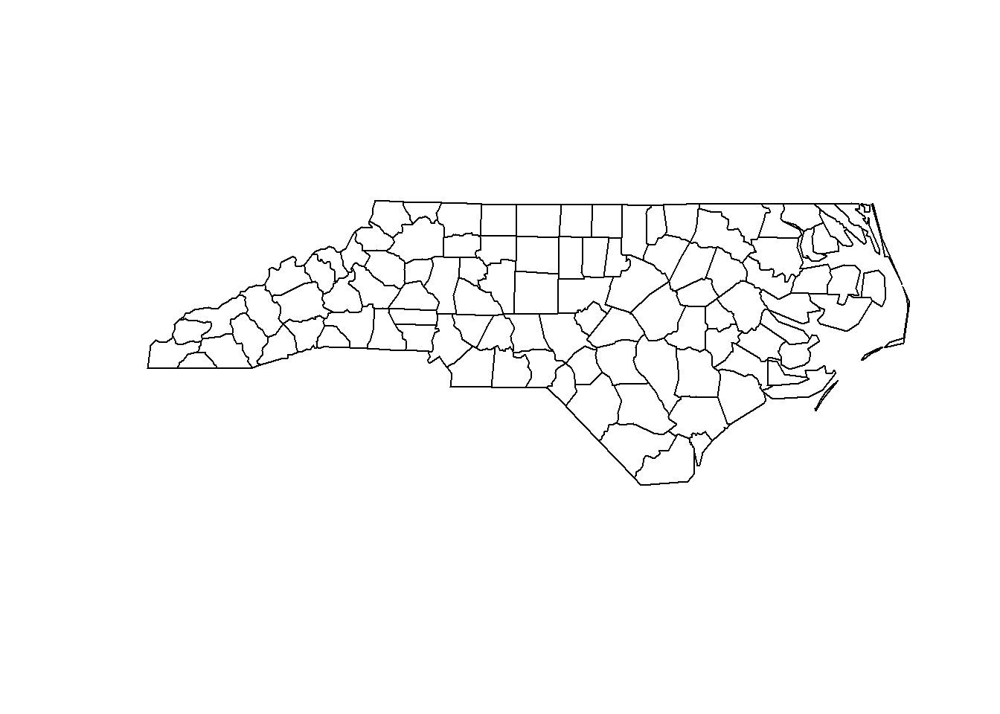
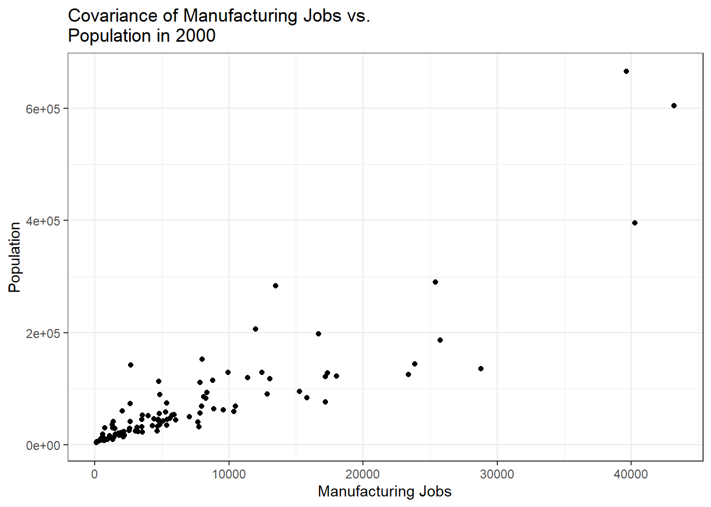
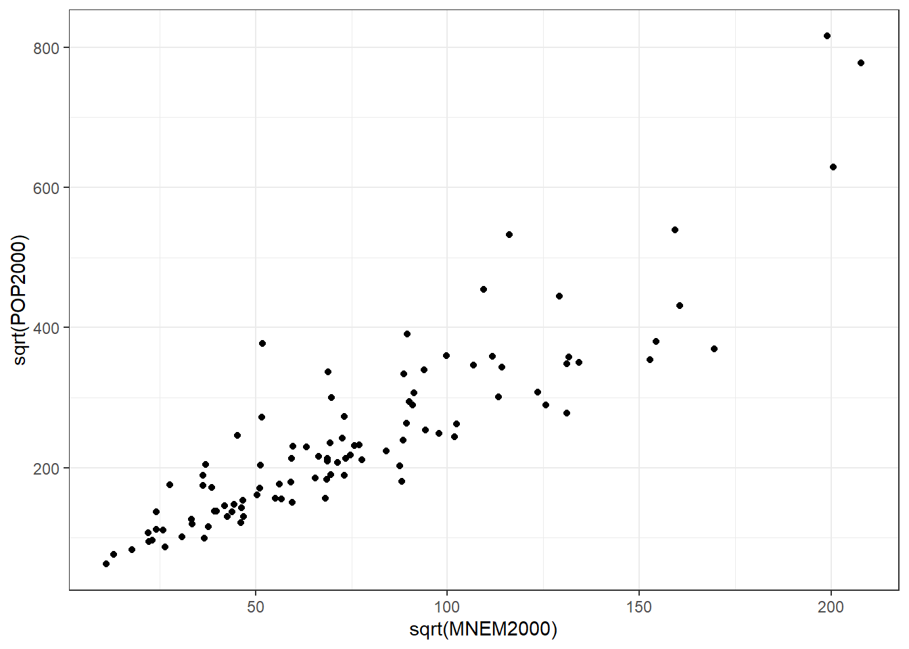
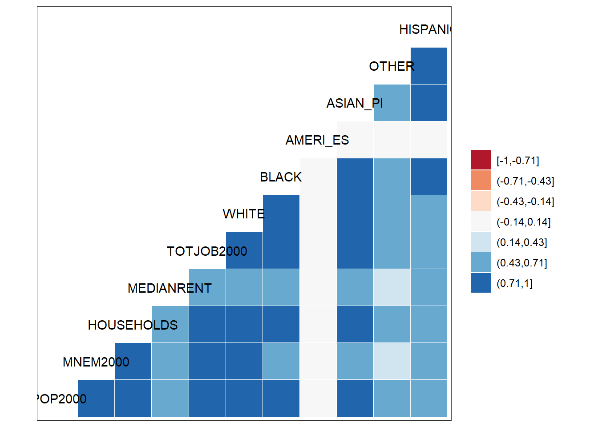
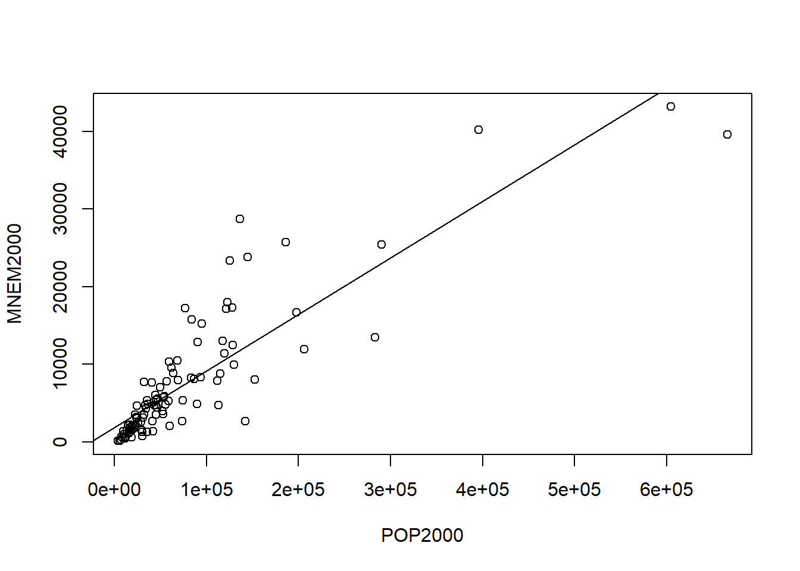
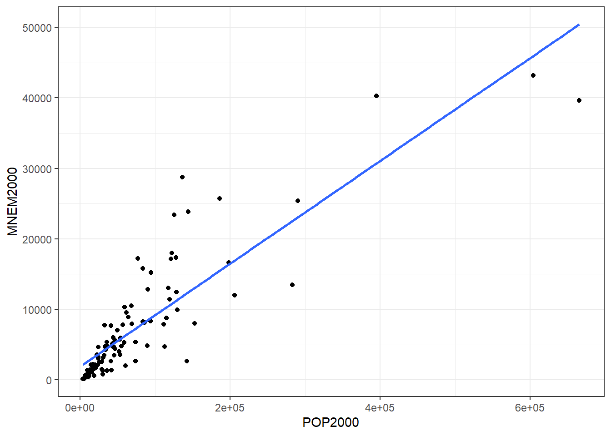

So far we’ve only focused on exploring a single variable by considering its frequency, histogram, and descriptive statistics. Doing this allows us to know a great deal about how some set of measured values, i.e., a sample, are distributed across a set of possible values and how those values are dispersed around some notion of the ‘middle’ of the data. That’s a lot of work, but what about moving beyond thinking only about a single variable?
Often, we want to consider the relationship between a pair of variables and the effect that one variable may have on the values of another – this is known as bivariate analysis, and we’ll explore it this week with our trusty North Carolina employment data.
For this Module, we’ll use the NC Shapefile from previous R Modules
(NC_REGION.shp), which contains four important “employment”
variables (MNEM2000, MNEM1990,
TOTJOB2000, TOTJOB1990), and two variables for
population (POP2000 and POP1990).
library(sf)
library(tidyverse)
NC <- read_sf("data/NC_REGION.shp")Let’s create a plot of just the “geometry” of the shapefile, in order to make sure it loaded correctly.
plot(st_geometry(NC))
As in previous R Modules, write up this document as an R Markdown
report, and export the results to a .pdf. Include both your
results, your R code, and the answers to the questions.
POP2000 variable. Include
the histogram itself, the density, the mean and median lines, and the
axis labels and title. If you’re using base R, look into the
probability argument for the hist()
function.An important consideration in our analysis is co-variation, that is, how the values of one variable change with the values of another. In our case, it is necessary to consider that the number of manufacturing jobs likely changes (co-varies) with population; i.e., counties with a higher population likely have a larger number of manufacturing jobs. Note that we’re also assuming causality in our speculative statement, that manufacturing depends to some degree on population values (e.g., larger population centers have more need for manufacturing jobs, too).
Before we formally test covariance, we should establish if these variables actually co-vary; let’s try a basic scatter plot:
library(ggplot2)
ggplot(
data = NC,
mapping = aes(x = MNEM2000, y = POP2000)
) +
geom_point() +
labs(
x = "Manufacturing Jobs",
y = "Population",
# The "\n" character is a "newline" escape character and can be used to
# break up long titles onto more than one line.
title = "Covariance of Manufacturing Jobs vs.\nPopulation in 2000"
)
Do we have visual evidence of a relationship? Maybe, but because the distribution of the observations clusters so many towards the origin, it makes it difficult to see the actual pattern. We can apply a transformation to each variable to see what’s going on:
ggplot(
data = NC,
mapping = aes(
x = sqrt(MNEM2000),
y = sqrt(POP2000)
)
) +
geom_point()
Much better; the sqrt() function doesn’t change small
values as much as it does large ones. The outliers were brought “closer
in” but the overall pattern is the same, just easier to visually
interpret. Note that our data trends from lower left to upper right in a
generally linear manner. This is visual evidence to suggest linear
covariance, but we need to formally test this relationship. For this,
we’ll use Pearson’s R
Testing covariance and performing bivariate analysis in R are
fortunately quite easy; most of the basic functions we need are in the
base package, which comes pre-loaded when we start R
Studio. However, we’ll use some functions from the corrr
package, as they work better with “tidy” format data (see the Tidyverse). We’ll use
dplyr (included when we load tidyverse) to
choose our two columns we wish to correlate.
library(corrr)
cor <- NC %>%
# We'll drop the 'geometry' on the fly, as it can potentially break the
# function. We're not actually getting rid of it from our original data, of
# course.
st_drop_geometry() %>%
select(MNEM2000, POP2000) %>%
correlate(use = "pairwise.complete.obs",
method = "pearson")
# The fashion() function in corrr is used to format the results of correlation
# for printing; all it does is make things look nicer in our output!
fashion(cor, decimals = 4)## term MNEM2000 POP2000
## 1 MNEM2000 .8702
## 2 POP2000 .8702The Pearson’s R for these two variables seems like a strongly
positive result – as the population increases, so does manufacturing
employment. We might also like to explore correlations between numerous
variables at the same time; it’s easy to do with the corrr
package and dplyr. Because we’re only looking at numeric
data, we can filter out both the geometry column, as well
as any character columns:
NC_filter <- NC %>%
# Again, we need to drop the geometry
st_drop_geometry() %>%
# Using select_if, we can choose only the columns that are numeric
select_if(is.numeric) %>%
# Finally, we can choose the columns we actually want to correlate. Note that
# this is a bit redundant with the `select_if()` above, but I wanted to show
# how to select columns programmatically with a logical test.
select(
c(
POP2000,
MNEM2000,
HOUSEHOLDS,
MEDIANRENT,
TOTJOB2000,
WHITE,
BLACK,
AMERI_ES,
ASIAN_PI,
OTHER,
HISPANIC
)
)Now, we can correlate our data:
# We can plot a correlogram with the GGally package. Install and load it, and use the `ggcorr()` function on our filtered data to get a plot
library(GGally)
NC_filter %>%
# We can set a diverging color palette if we set the nbreaks argument. Use
# RColorBrewer::brewer.pal.info to see some of the available color palettes in
# R.
ggcorr(nbreaks = 7, palette = "RdBu")
Using the correlate() and fashion()
functions in corrr, create a Pearson’s r
correlation matrix of your filtered data. When filtering and selecting
columns, choose different/additional columns to compare (don’t just use
the ones in the Lab!). Provide the matrix and the correlogram (and your
R code used to make it!) in your R Markdown report. Identify the
strongest and weakest correlation coefficients where r \(<\) 1.
We’ve assessed the covariance visually and computationally. There seems to be a strong, positive, and linear relationship between manufacturing and population. Now, we can run a regression – what R was really made to do – and explore this relationship further.
Running a linear regression in R is done with the linear model
(lm()) function, and its primary argument is written in
“formula syntax”, a special way of describing a formula. Formula syntax
looks like y ~ x, which is read as “y as a function of x”.
In the context of lm(), this means our dependent variable
y is a function of our independent variable
x.
model <- lm(MNEM2000 ~ POP2000, data = NC)
model##
## Call:
## lm(formula = MNEM2000 ~ POP2000, data = NC)
##
## Coefficients:
## (Intercept) POP2000
## 1.891e+03 7.294e-02What we get is the classic equation of a line: \(y = mx+b\), where \(b\) is our (Intercept) and
\(m\) is our POP2000
coefficient. We can plot this in R on top of a scatter plot:
model <- lm(MNEM2000 ~ POP2000, data = NC)
plot(MNEM2000 ~ POP2000, data = NC)
abline(model)
Or alternatively in ggplot2, with
stat_smooth():
library(ggplot2)
ggplot(NC, aes(x = POP2000, y = MNEM2000)) +
geom_point() +
# `se = FALSE` means we don't plot a confidence interval around our line.
stat_smooth(method = "lm", se = FALSE)
Now we have our regression line. However, we need to measure whether it’s actually a good fit. We can use the \(r^2\) “goodness of fit measure” to determine this.
s <- summary(model)
s##
## Call:
## lm(formula = MNEM2000 ~ POP2000, data = NC)
##
## Residuals:
## Min 1Q Median 3Q Max
## -10836.5 -2051.7 -973.5 912.1 16942.0
##
## Coefficients:
## Estimate Std. Error t value Pr(>|t|)
## (Intercept) 1.891e+03 5.368e+02 3.522 0.000652 ***
## POP2000 7.294e-02 4.171e-03 17.485 < 2e-16 ***
## ---
## Signif. codes: 0 '***' 0.001 '**' 0.01 '*' 0.05 '.' 0.1 ' ' 1
##
## Residual standard error: 4281 on 98 degrees of freedom
## Multiple R-squared: 0.7573, Adjusted R-squared: 0.7548
## F-statistic: 305.7 on 1 and 98 DF, p-value: < 2.2e-16Here, it’s the Multiple R-squared value. If we assign
the summary of our linear model to an object, e.g. s, we
can return the r-squared (and by extension, other attributes) with
s$r.squared, which gives us 0.7572621.
Larger \(r^2\) values for a
bivariate regression line indicate that more of the variance in
y is explained by the variance in x. In other
words, this means that roughly 76% of manufacturing in each county is
explained by the population of that county; this also means that \(\approx\) 24% of variance is
not explained by population. There’s clearly more to
the story, such as how manufacturing is distributed geographically
around the state in a certain way, but we’ve now established that
population is an important part of our model.
Next, we should consider our other “goodness of fit” measure. We need to assess how the differences between the manufacturing values predicted by the regression line differ from the actual observed values. These differences are called residuals, and we can call a list of the residuals in R:
model <- lm(MNEM2000 ~ POP2000, data = NC)
head(model$residuals)## 1 2 3 4 5 6
## -640.8329 -1265.6555 3589.3870 -2683.4450 -1682.8900 -1520.8310Examining the results tells us a lot about our regression; for most regressions, the ideal is to have the residuals symmetrically distributed around the mean of the residuals, which should be close to 0. When the mean of the residuals is close to 0, and the residuals are normally distributed around this mean, it indicates that when our regression misses its prediction, we’re missing both “above” and “below” the actual value (which is good).
Think of it like target shooting: a good regression line is going to hit the bulls-eye some of the time, but not all the time. When it misses the bulls-eye, we want it to miss both high and low, left and right of it evenly. If we consistently missed below the bulls-eye, for example, we’d have a clue about a systematic problem in our estimate (in the target shooting example, perhaps we’ve forgotten to account for the wind direction or the speed of our arrow).
We now have two “goodness of fit” measures to help us decide if our prediction line fits our data well. A higher \(r^2\) value in combination with a lower standard error estimate gives us some confidence that our line of fit is suitable.
Geographers work with residuals quite a bit, but why? Just as we want to know how are “misses” are distributed around the regression line, we also want to know how the misses are distributed across geographic space. If we see evidence of spatial dependence in our regressions, we have reason to think that our model might perform well in some geographic areas and poorly in others. To do this, we start with something called a “residual map”. We’ll do more with the residuals later, but for now, let’s add the residuals to our shapefile attribute table, then create a simple map that visualizes the distribution of the residuals around the state.
We can append the residuals of our model to our original Shapefile quite easily:
NC$Residuals <- model$residualsIf you want to save your shapefile, use the write_sf()
function from sf:
write_sf(NC, "NC.shp")You can use any R package you wish to generate this map, but I
recommend tmap, as it’s designed to work well with
choropleth mapping.
© 2022 Maggie Sugg & Harrison Brown. v.1.0.0